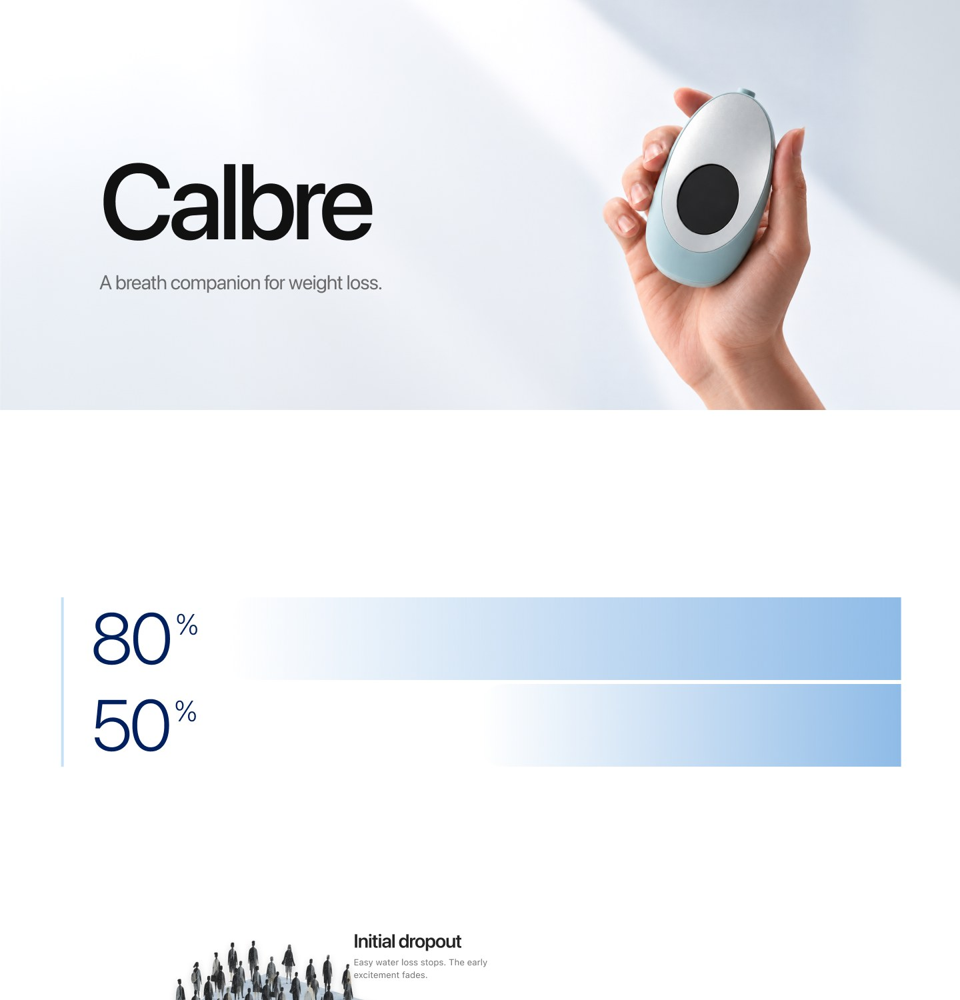
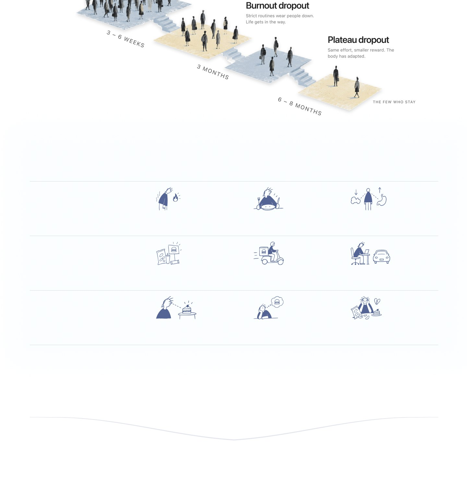
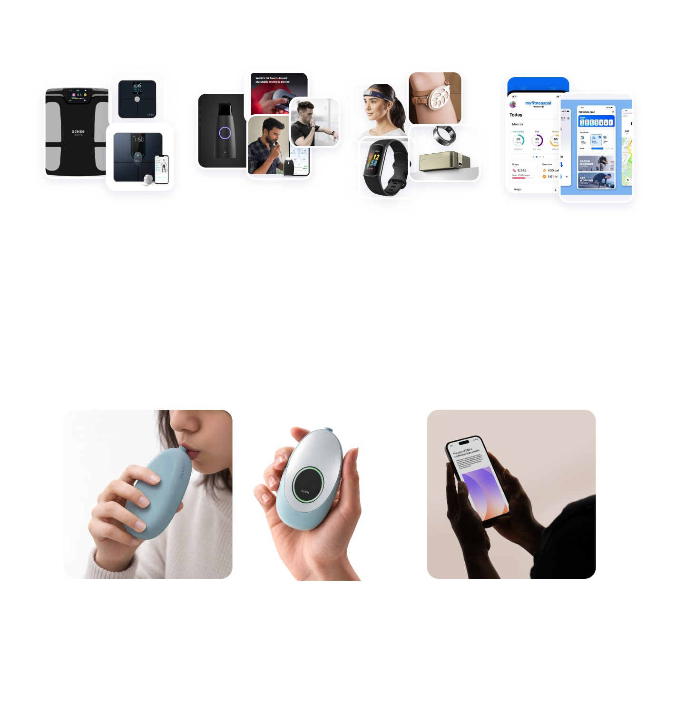
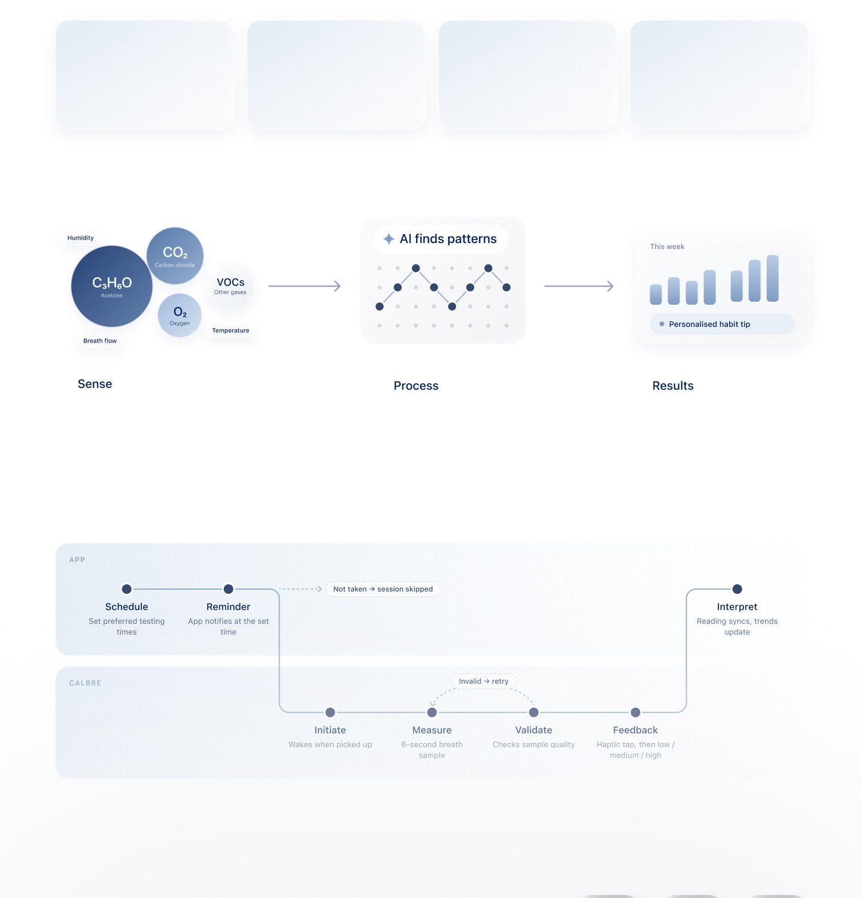
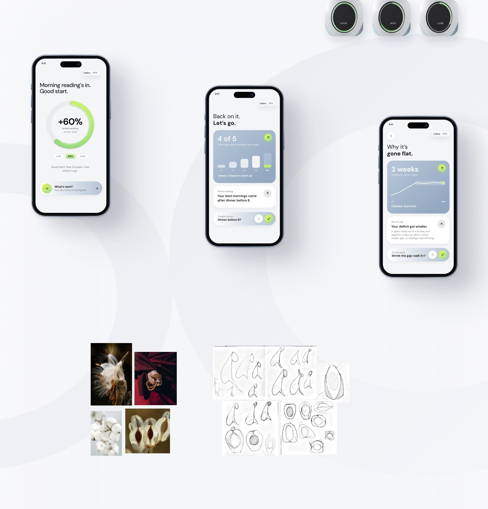
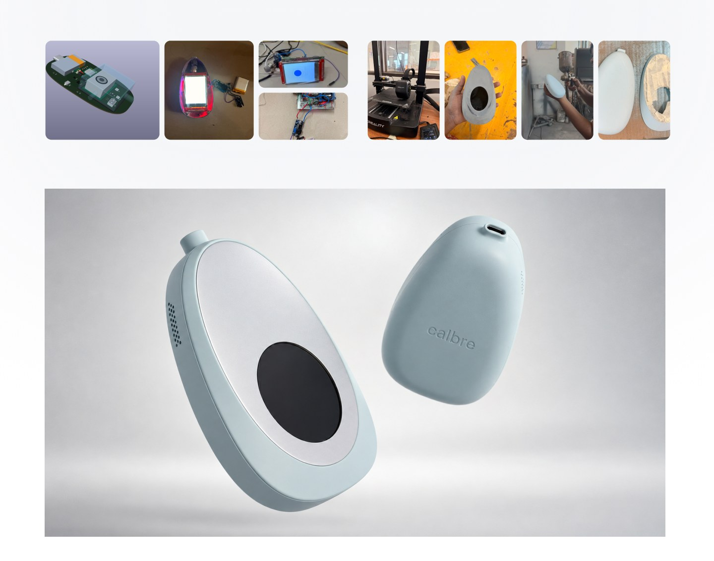

Losing weight doesn't guarantee long-term weight maintenance.
Initial weight loss and sustained weight maintenance are two different challenges. Many people regain weight over time, even after achieving their initial goal.
People don't quit at the start. They quit along the way.
What makes long-term weight maintenance difficult?
Reduced energy expenditure (adaptive thermogenesis)
Increased appetite
Hormonal changes: lower leptin, higher ghrelin
Cheap, ultra-processed foods and pervasive marketing
Constant food availability through delivery platforms
Sedentary work and car-dependent environments
Eating triggered by external cues rather than hunger
Persistent cravings
Emotional eating and loss of control
01
Biology
02
Environment
03
Behaviour
(Hall & Kahan, 2018)
of lost weight is regained within 5 years
of lost weight is regained within 2 years
When progress becomes harder to see
As weight loss slows, changes on the scale become less noticeable, making progress harder to recognise.
How can progress be made visible beyond the scale?
Existing products in the market
Body measurement
Weight and body composition
Biological markers
Breath, glucose and metabolic signals
Wearables
Activity, sleep and recovery
Tracking apps
Food, workout and habit logging
Existing products track weight, activity and metabolic indicators, but feedback can remain number-focused and place the burden on users to interpret their progress and sustain their habits.
THE SOLUTION
Calbre
Calbre is a handheld breath-analysis device designed to support long-term weight maintenance. It analyses breath-based metabolic signals, tracks changes across repeated readings, and translates these trends into personalised guidance on daily habits.
Analyse
breath-based metabolic signals
02
Track
changes across repeated readings
03
Guide
daily habits with personalised advice
Tech flow
Why breath-based?
01
Beyond the scale
Track metabolic signals when body weight stays unchanged.
02
Low effort
Make regular monitoring easier to sustain without daily manual logging.
03
Track changes over time
Build a personal baseline to recognise longer-term trends.
04
Guide daily habits
Use these trends to inform decisions that support weight maintenance.
Interaction Architecture
Designed for less friction pointer
A playful tone that
encourages consistent habits
ON THE DEVICE
High reading
Full ring
Med reading
Two thirds
Low reading
One third
NORMAL DAY
Compared with you
Readings are shown against your own baseline, never raw ppm.
SETBACK
Progress before misses
A week graph turns “3 missed” into “4 days to catch up”.
PLATEAU
One next step
Answer the why, then actionable step based on your trends and patterns
Form exploration
The form exploration draws inspiration from a seed’s protective shape and its potential for growth.
Proof of concept
Prototyping
First working circuit, fitted into a clear shell.
Built with an MQ-138 gas sensor to read breath acetone, capacitive touch to start a reading, and a TFT screen to show the result.
3D-printed shells, sanded and finished by hand.